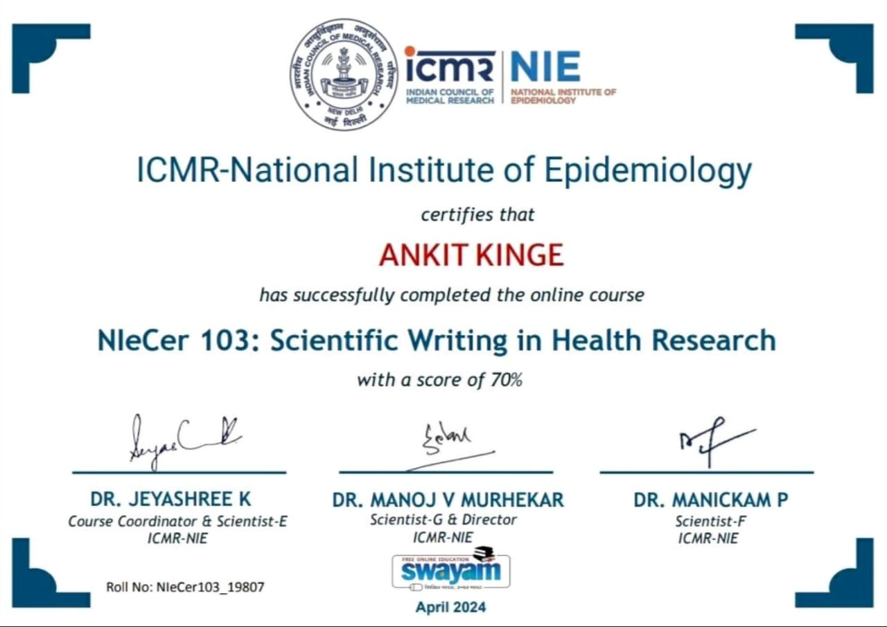
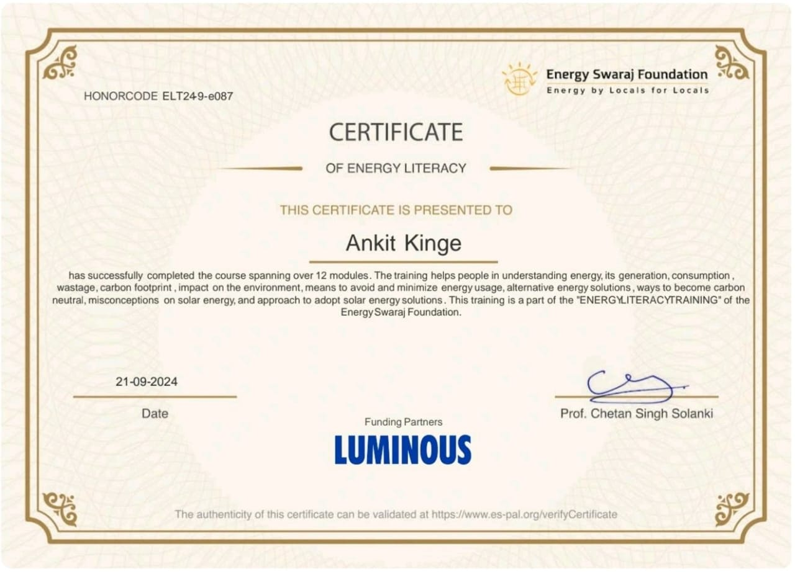
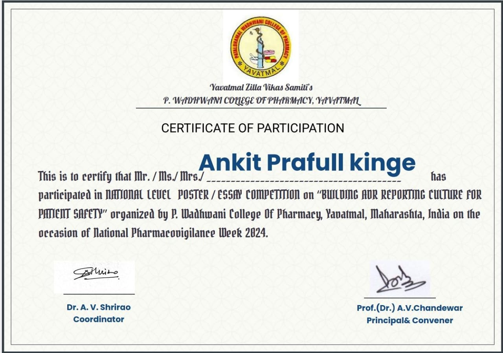
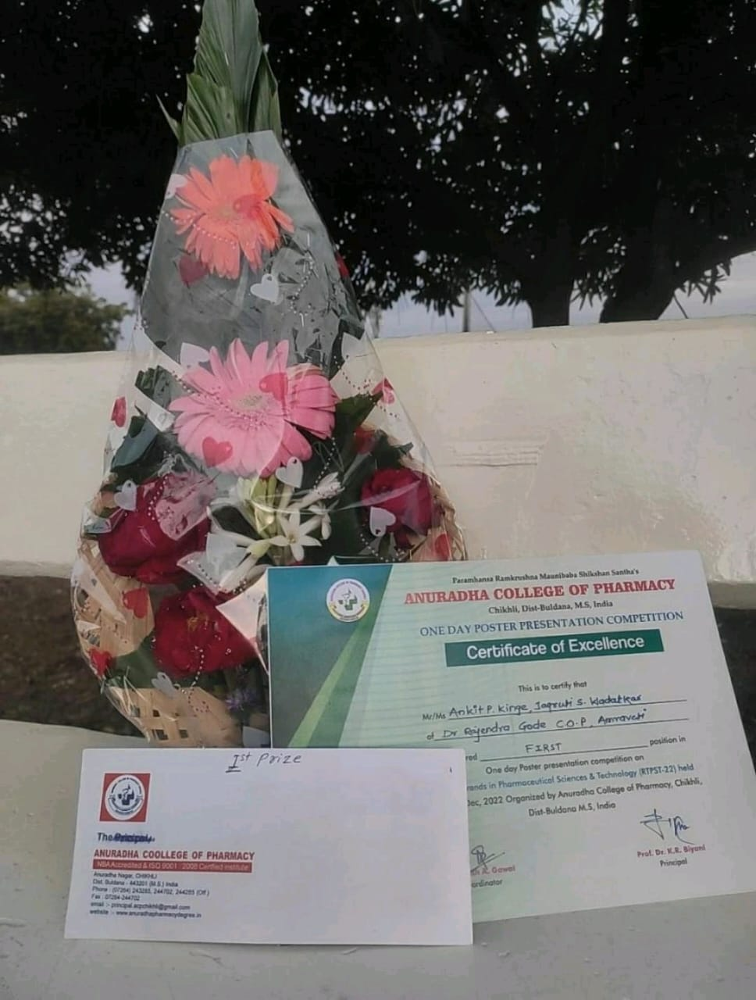

Achievements
Certifications

ICMR- National Institute of Epidemiology
Scientific Writing in Health Research
I have recently completed the online course NIeCer 103: Scientific Writing in Health Research with a score of 70%.!! This course was conducted by the prestigious ICMR-National Institute of Epidemiology and it was an incredible learning experience. As a healthcare professional, I understand the importance of effective scientific writing in the field of health research. 🎊Completing this course has not only enhanced my scientific writing skills but also boosted my confidence in conducting and presenting research. I am excited to apply the knowledge gained from this course in my future projects. #NIeCer103 #ScientificWriting #HealthResearch #ICMR #NationalInstituteofEpidemiology #OnlineCourse #ResearchMethodology

Energy Literacy Training
Energy Swaraj Foundation
"Empowered with Energy Literacy Training Certification" I've successfully completed the Energy Literacy Training Certification program. With this certification, I'm confident in my ability to make informed decisions about energy usage, promote sustainable practices, and contribute to a more energy-literate community..!! #EnergyLiteracy #TrainingCertification #Sustainability #EnergyEfficiency #RenewableEnergy"

National Level Poster Competition
On Occasion of national Pharmacovigilance Week 2024
"National Pharmacovigilance Week 2024: Empowering Safe Healthcare" I have participated in the National Pharmacovigilance Week 2024, a nationwide initiative promoting adverse drug reaction awareness and safe healthcare practices. My poster presentation at the national-level competition showcased innovative research on pharmacovigilance, highlighting the importance of monitoring and reporting adverse drug reactions. This event emphasized the crucial role of pharmacovigilance in ensuring patient safety and public health. I'm committed to contributing to this mission! #NationalPharmacovigilanceWeek
72nd Indian Pharmaceutical Congress,Nagpur
Theme: "Access to Quality & Affordable Medical Products"
I had the honor of participating as a delegate in the 72nd Indian Pharmaceutical Congress held at the Department of Pharmaceutical Sciences, Rashtrasant Tukadoji Maharaj Nagpur University, Nagpur from January 20-22, 2023. It was an incredible experience to be a part of this prestigious event, which brought together experts and professionals from the pharmaceutical industry to discuss the latest advancements and challenges in the field.💊 The theme of this year's congress was "Innovations in Pharmaceutical Sciences for Better Healthcare,"✨ I have also attend the Poster Presentation, and sessions on research and developments in drug discovery, formulation, and delivery, as well as discussions on the latest regulatory updates and challenges in the pharmaceutical industry. I would like to extend my gratitude to the organizers for putting together such a well-organized and informative event. #IPC2023 #NagpurUniversity
Hands-on-Training Workshop
Microemulsion-Based Drug Delivery Strategies for treating Behavioral Disorders
I had the opportunity to participate and attend the Two Days Hands-on-Training Workshop on "MICROEMULSION- Based Drug Delivery Strategies for Treating Behavioral Disorders" at School of Pharmacy & Technology management NMIMS Shirpur on 26th & 27th April, 2024. 🌠It was an enriching experience to learn about the latest advancements in drug delivery strategies for treating behavioral disorders. The workshop was organized by the esteemed faculty of SPTM, NMIMS Shirpur and was attended by professionals and students from various pharmaceutical companies and universities. The two-day workshop was packed with informative sessions, interactive discussions, and practical demonstrations, making it a truly hands-on experience. Attending this workshop has not only expanded my knowledge but also sparked my interest in microemulsion-based drug delivery. I am grateful to SPTM, NMIMS Shirpur for organizing such a comprehensive and informative workshop..!!
DST-SERB Sponsored 1st DMCP-DMIHER Healthcare and Technology Summit
On "Innovations and Emerging Trends in Drug Delivery"
Thrilled to share my exciting experience at the DST-SERB Sponsored 1st DMCP-DMIHER Healthcare and Technology Summit (DDHTS 2024)..!! 🎉💡 Innovations and Emerging Trends in Drug Delivery🧬💊 Date: 4th & 5th October 2024 Location: Datta Meghe College of Pharmacy, DMIHER (DU), Wardha, Maharashtra, India As a delegate, I had the privilege of: ✨ Networking with renowned experts ✨ Learning from cutting-edge research presentations ✨ Exploring innovative solutions in drug delivery And... I'm proud to say I presented a Scientific Poster.!! 📋🎉 Grateful for the opportunity to share my research and receive valuable feedback..!! Thank you DST-SERB, DMCP-DMIHER, and organizers for this fantastic experience..!!Publications
Oral Disintegrating Tablets
Published in International Journal of Novel Research and Development
The oral disintegrating tablet (ODT) has undergone a significant transformation over the years, revolutionizing the way medications are administered. Initially introduced as a novel dosage form, ODTs were designed to rapidly disintegrate in the mouth, providing faster relief from symptoms. With advancements in technology and formulation techniques, ODTs have evolved to offer improved patient compliance, enhanced bioavailability, and increased convenience. Today, ODTs are available in a wide range of therapeutic areas, including pain management, allergies, and central nervous system disorders, offering patients a quicker and more comfortable way to take their medicationsPassion Fruit Jellies for Pediatric Diabetes Management
GSC Biological and Pharmaceuticals Sciences
"Passion Fruit Jellies for Pediatrics Diabetes Management" A Delicious and Healthy Solution for Kids with Diabetes..!! Our passion fruit jellies are specially crafted for pediatric diabetes management. Made with 100% natural ingredients and zero added sugars, these jellies offer a sweet, healthy, and guilt-free treat for kids with diabetes. Our unique formula combines the natural sweetness of passion fruit with the benefits of fiber, vitamins, and antioxidants, making it an ideal snack for kids with diabetes. Our commitment to quality and safety ensures that every batch of passion fruit jellies meets the highest standards. We use only the freshest ingredients, sourced from trusted suppliers, to create a product that is both delicious and trustworthy. our passion fruit jellies are the perfect choice.Transdermal Patches for Wound Healing
World Journal of Pharmaceutical Research
The development and evaluation of transdermal patches with Convolvulus Nervosus Burm leaves extract aims to design, develop, and evaluate transdermal patches containing bioactive compounds from the leaves for potential therapeutic applications. The methodology involves extracting bioactive compounds from the leaves, formulating transdermal patches using polymers and adhesives, and evaluating the patches for physical, mechanical, and pharmacological properties. The expected outcomes include the development of stable and effective transdermal patches, evaluation of skin permeation, bioavailability, and therapeutic efficacy, and potential applications in treating various skin-related disorders and diseases.Micro-Emulsion for Oral Delivery
International Journal of Pharmaceutical Research and Applications
Microemulsions have revolutionized the field of drug delivery systems, offering a paradigm shift in the way therapeutic agents are administered and absorbed by the body. A microemulsion is a thermodynamically stable, transparent, and isotropic mixture of oil, water, and surfactant, which can solubilize both hydrophilic and lipophilic drugs. This unique characteristic enables microemulsions to enhance the bioavailability, solubility, and stability of drugs, leading to improved therapeutic efficacy and reduced side effects. Furthermore, microemulsions can be tailored to achieve controlled and targeted drug release, making them an attractive platform for the development of novel drug delivery systems. Overall, microemulsions have emerged as a promising technology to overcome the challenges associated with conventional drug delivery systems, and their potential applications are vast and diverse.Awards

National Level Conference
Oral Presentation
"Immerse yourself in Innovation" I got 2nd Prize in One day National Conference on "NOVEL EXCIPIENTS IN DRUG FORMULATION AND DRUG DELIVERY : CHALLENGES AND OPPORTUNITIES" held at Dr. R. N. Lahoti Institute of Pharmaceutical Education and Research Center, Sultanpur Sponsored by Association of Pharmaceutical Teacher of India (APTI) & Association of Health Care Professionals.. In this Conference I have learn about different aspects of drug Formulations, discovery, and Novel excipients used in Drug formulations.
National Science Day-2025
Sponsored by The national Academy of Sciences, India (NASI)
"Empowering Innovation: Winning Prize in Eco-Friendly Menstrual Hygiene Project Presentation" Not only did I win a prize, but I also gained invaluable confidence and insight into sustainable menstrual practices. My project focused on designing innovative, eco-friendly solutions for menstrual hygiene management. Through extensive research and creativity, I developed a unique model that showcased the potential for sustainable menstrual products. The presentation was a huge success, and I was honored to receive a prize for my efforts.
State Level Cosmo-Exhibition
Cosmo Expo: Exploring the Wonders of the Universe
I secured 2nd prize in the State-Level "Cosmo-Exhibition" Business Plans with Mentorship Support Competition, organized by Rajarshi Shahu College of Pharmacy, Buldhana, on April 4, 2024. This exceptional experience not only boosted my confidence but also provided invaluable insights into the world of cosmetics. I gained hands-on knowledge of various cosmetic products, their development, and marketing strategies. The Cosmo-Exhibition was an incredible platform to learn, innovate, and network with like-minded individuals. I'm grateful for the mentorship support and the opportunity to showcase my business plan.

National Level Conference
Poster Presentation Competition
I secured 1st place in the Oral PosterPresentation category at the National-Level conference on "Recent Trends in Pharmaceutical Sciences & Technology (RTPST-22)" held at Anuradha College of Pharmacy, Chikhli on December 12, 2022. This prestigious conference provided a platform to share my research and ideas with renowned experts and scholars in the field of pharmaceutical sciences. I'm grateful for the opportunity to showcase my work and receive recognition for my efforts. This achievement has not only boosted my confidence but also reinforced my passion for research and innovation in pharmaceutical sciences.